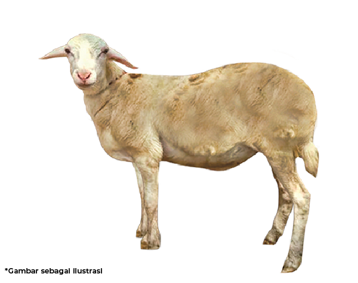
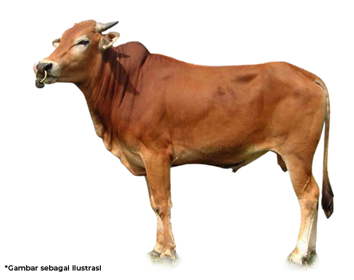
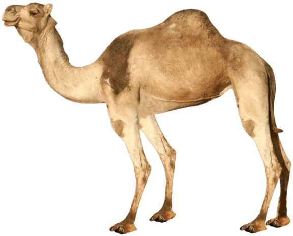

Rukun Qurban
Ada 4 hal yang harus terpenuhi agar Qurban dinyatakan Sah, di antaranya :
- Pekerjaan menyembelih qurban atau dzabbu
- Penyembelih hewan qurban atau dzabih
- Hewan yang akan disembelih
- Alat untuk menyembelih qurban
Syarat Sah Hewan untuk Qurban
Tidak semua hewan bisa untuk dijadikan hewan Qurban, ada beberapa syarat yang Wajib terpenuhi, di antaranya :
Usia Hewan Qurban
Sekalipun kamu memilih hewan ternak yang termasuk dalam jenis hewan qurban, tidak serta merta bisa digunakan untuk qurban. Dimana ada ketentuan umur hewan qurban yang disesuaikan dengan jenisnya.
Kambing hanya boleh usia di atas 1 hingga 2 tahun. Domba hanya boleh usia di atas 6 hingga 12 bulan. Sapi hanya boleh usia di atas 2 hingga 3 tahun. Unta hanya boleh usia di atas 5 hingga 6 tahun. Jika usia hewan yang akan dikurbankan kurang atau melebihi, maka tidak sah jika digunakan untuk qurban.
Kondisi Hewan secara Fisik
Kamu juga harus memperhatikan kondisi hewan, selain dipastikan tidak dalam kondisi hamil atau sakit. Perhatikan kondisi fisiknya dan pastikan tidak terdapat cacat permanen, hal ini akan menyebabkan aib dan tidak sah qurbanya.
Cacat yang dimaksud penglihatan hewan berkurang misalkan seperti buta sebelah, tidak berjalan dengan normal karena kaki pincang. Badan hewan qurban sangat kurus sehingga tidak terdapat adanya sumsum tulang.
Status Kepemilikan Hewan
Saat membeli hewan qurban, tanya terlebih dahulu bagaimana kepemilikan nya atau siapa yang memiliki hewan qurban tersebut. Jangan sampai membeli bukan pada pemiliknya, bisa juga hewan hasil mencuri atau merampok. Nantinya tidak akan sah jadi hewan qurban.
Bahkan tidak sah jika hewan tersebut dalam kasus sengketa seperti masih digadaikan, hewan bagi waris atau status kepemilikan tidak pada perseorangan. Pasalnya tidak akan sah qurban seseorang jika nantinya ada yang mengatakan hewan tersebut masih jadi milik orang lain, sekalipun sudah disembelih.
Jenis dan Pembagian Hewan Qurban
Sudah dijelaskan jika hewan yang boleh digunakan untuk qurban hanya hewan ternak dalam kondisi sehat dan status kepemilikan jelas. Maka hukum hewan untuk qurban ini adalah sah dan boleh digunakan untuk qurban.
Bagaimana jika ingin qurban namun tidak mampu membelinya, ada beberapa alternatif pembagian hewan qurban. Seperti unta yang bisa digunakan untuk 10 orang, sedangkan sapi hanya boleh untuk 7 orang. Namun, ada juga hadist yang menyatakan sah hukumnya qurban seekor kambing untuk satu keluarga.
Harga Hewan Qurban
Kambing
2.150.000
BERAT >= 27-30 KG
Sapi
15.000.000
BERAT >= 225 KG
Unta
33.500.000
BERAT >= 300 KG